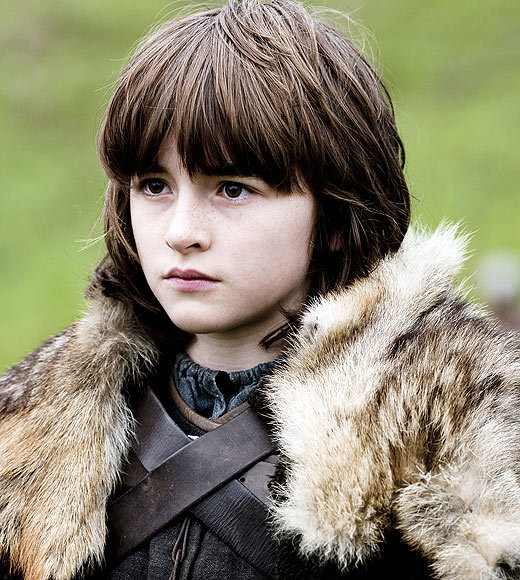
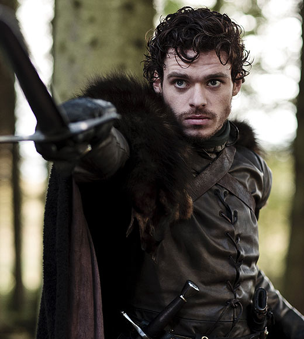
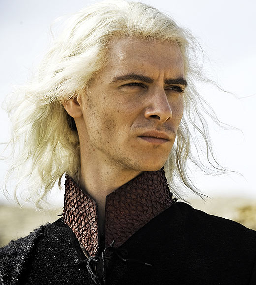
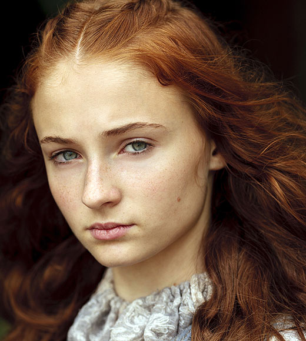
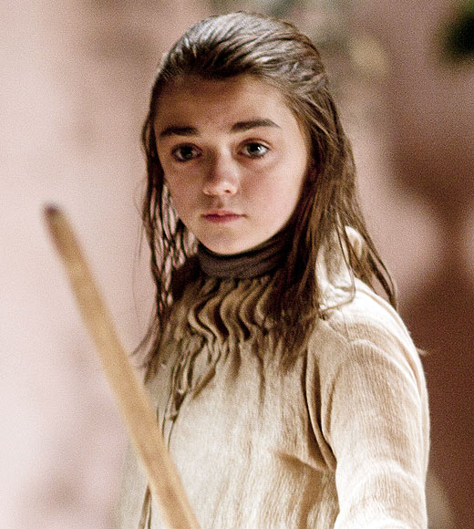
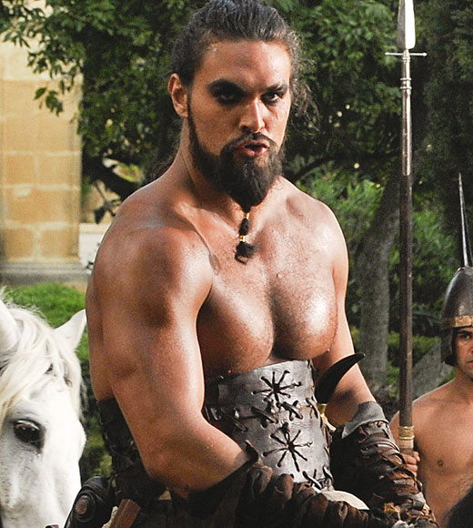

主要角色介紹
Bran Stark

艾德和凱瑟琳的幼子，有著追根究底的天性，喜歡攀爬，經常在城堡爬上爬下。他的小狼名字叫Summer。
羅伯 史塔克

除了瓊恩·雪諾這個私生子之外，艾德和凱瑟琳合法婚姻下所生的長子，臨冬城的繼承人。他的狼名叫Grey Wind。
Viserys Targaryen

“瘋王”伊裏斯·坦格利安的次子，在父母和兄長雷加死後與妹妹丹妮莉絲開始流亡的生活。人稱“乞丐王”，為了躲避莫須有的刺客而過著顛沛流離的生活。為了 和妹妹生存下去，典當了僅剩的一些家財，但是傲骨和重新奪回屬於坦格利安家族王權的決心卻從未離他而去。對妹妹很兇，有著王子自尊的架子卻很寒酸懦弱。
sansa stark

艾德與凱瑟琳的長女。為人天真，對這個世界抱有幻想。她最大的心願就是嫁給一名王子或是英勇的騎士她的狼名叫Lady
arya stark

艾德與凱瑟琳的次女，和姐姐珊莎不同，她可不是一位標準的小淑女，她有點野，喜歡劍術。艾麗亞和瓊恩·雪諾的關係很要好。她的狼叫Nymeria。
卓戈卡奧

東方大陸草原民族多斯拉克人的一支部落首領，“卡奧”是他的頭銜名，相當於“可汗”。他是當時最強大的卡奧之一。卓戈將娶丹妮莉絲·坦格利安公主為妻，並承諾將旗下10萬精兵作為回贈，交付其兄韋賽裏斯指揮，以助其奪回王位。